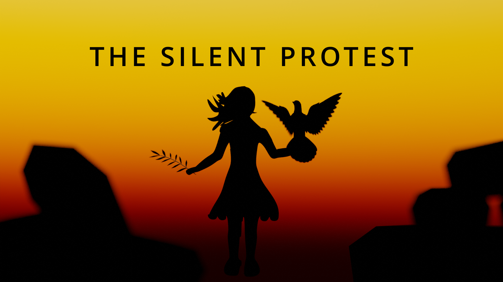
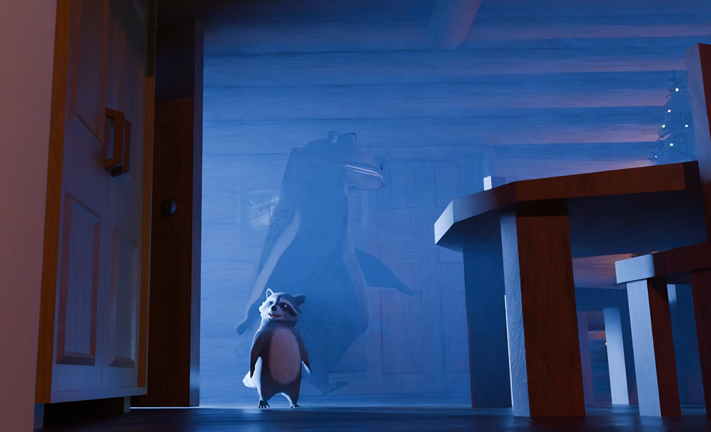
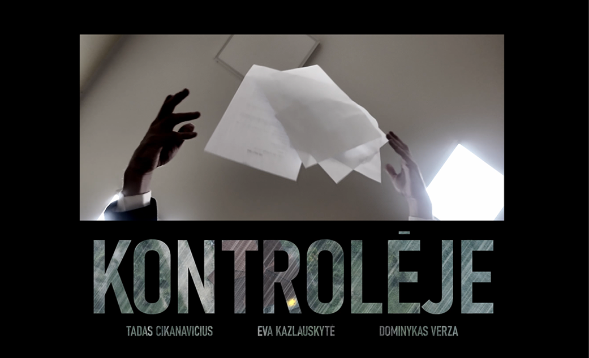
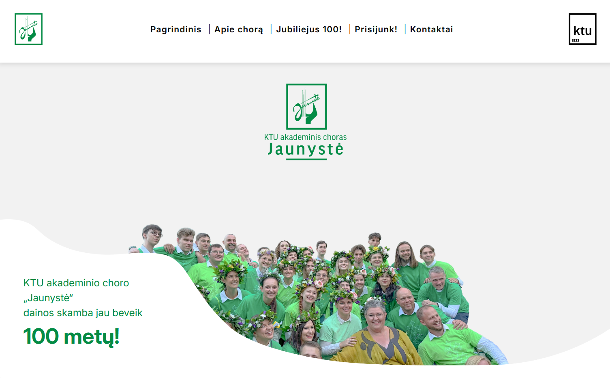
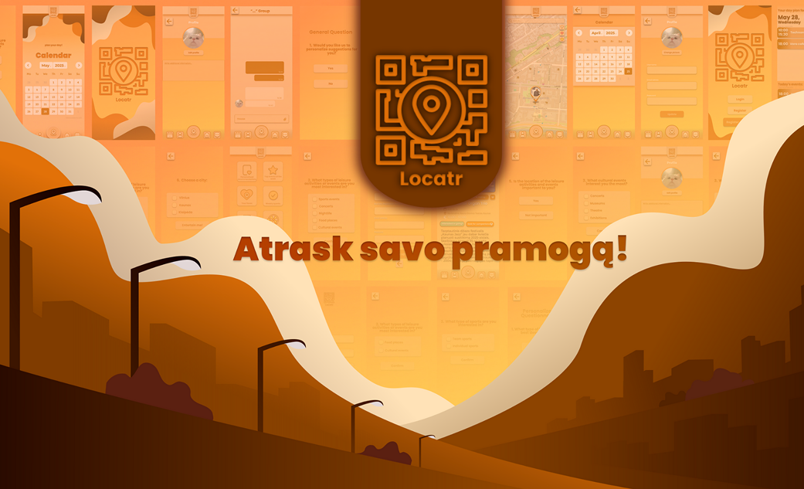
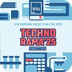
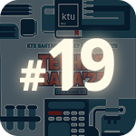
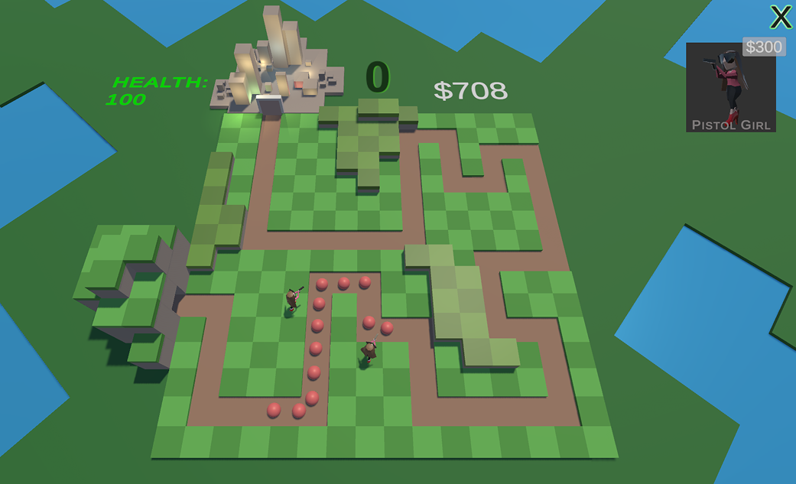

Trumpai
Specializuojuosi skaitmeninio turinio kūrime – techninių įgūdžių ir kūrybinės vizijos derinyje. Puoselėju gebėjimą sujungti programavimą ir vizualinį pasakojimą. Mane įkvepia iššūkis panaudoti technologijas kaip priemonę įtaigiai komunikacijai ir novatoriškam dizainui.
Išsilavinimas
INFORMATIKOS MOKSLŲ BAKALAURO LAIPSNIS, įgytas Kauno technologijos universitete. Baigta Programų sistemų studijų krypties Multimedijos technologijų studijų programa Informatikos fakultete. (2022 - 2026)
Galiu dirbti televizijos ir radijo, reklamos, skaitmeninio turinio kūrimo ir transliavimo, žaidimų, interaktyvių sistemų ir mobiliųjų aplikacijų projektavimo bei programavimo įmonėse ir organizacijose.
Patirtis
Praktika KTU Studentų aktyvumo centre | 2026
Front-end ir back-end internetinės svetainės chorasjaunyste.lt kūrimas, paminint KTU akademinio choro „Jaunystė“ 100-metį.
Praktikuota:
- Modernus, žiniatinkliui optimizuotas ir responsyvus dizainas.
- Techniniai, back-end programavimo aspektai.
- Aukšto standarto, privatumo reikalavimus atitinkantys duomenų srautai.
- Patogios vartotojo patirties diegimas tiek vartotojams, tiek administravimo procesams.
- Komunikacija su departamentų vadovais ir koordinatoriais.
Akademinė patirtis
Multimedija ir vizualinis pasakojimas

Pilnas 3D animuoto kūrinio gamybos procesas, naudojant optimizavimo metodus bakalauro baigiamajam darbui
„The Silent Protest“

Komandos vadovas 3D animaciniame trumpametražiame filme
„Nekviesti svečiai“

Prodiuseris ir komandos vadovas trumpametražiame filme
„Kontrolėje“
Programinės įrangos ir interaktyvioji inžinerija

Praktika KTU ir besitęsiantis svetainės kūrimas 100-metį švenčiančiam KTU akademiniam chorui
„Jaunystė“


„Technorama 2025“ dalyvavimas KTU
Viešai išrinkta kaip 19-oji inovacija iš 74 – lrytas.ltMobiliosios programėlės, skirtos laisvalaikio ir renginių planavimui, kūrėjas -
„Locatr“

Unity paremto strateginio žaidimo kūrėjas
„Tower Defense Seasons“
Įgūdžiai
Programos ir įrankiai
- Blender, Adobe Creative Cloud (Premiere Pro, Photoshop, After Effects, Illustrator), DaVinci Resolve, Krita, Figma, Inkscape, Reaper, Tracktion’s Waveform, Android Studio, OBS, CasparCG, Flowframes, Elevenlabs, kiti DI įrankiai.
Multimedija
- 3D/2D kūrybos srautas – išteklių modeliavimas, įkaulinimas bei animacija interaktyviai, dinamiškai medijai,
- Vizualinės sistemos – kameros darbas, apšvietimas ir techninė vaizdo įrašų postprodukcija,
- Garso inžinerija – garso dizainas, muzika, garso ir vaizdo sinchronizacija,
- Programinės įrangos architektūra – programėlių ir žiniatinklio pagrindu veikiančių vartotojo sąsajų projektavimas ir diegimas, atsižvelgiant į vartotojo patirtį.
Programavimas ir technologijos
HTML5/CSS3, JavaScript, PHP, Kotlin, Python, C#, Lua.
Bendruomenė ir kūrybiškumo vystymas
KTU akademinis choras „Jaunystė“ | narys ir pagalbininkas (2022 – dabar)
- 4 metai aukšto lygio chorinio atlikimo, daugybė koncertų, derinant repeticijas su studijomis.
- Choro svetainės projekto koordinavimas su KTU rinkodaros ir komunikacijos departamentu.
- Oficialus universiteto prekės ženklo ir choro veidas, atstovaujantis „KTU Inspired“ bendruomenei.
- Choro meno vadovės įteikta skatinamoji premija už išskirtinį indėlį į choro veidą skaitmeninėje erdvėje.
Savanoriavimas KTU (2025)
- Savanoriavimas KTU pirmakursių apgyvendinimo procese.
- Bendrabučio aukšto seniūnas, palaikantis komunikaciją su gyventojais.
Lietuvos sportinių šokių federacijos narys (2012 – 2022)
- 10 metų šokio patirtis – ritmo supratimo, erdvinio suvokimo ir sinchronizacijos įvaldymas.
Kaišiadorių meno mokykla | Muzikos mokyklos absolventas (2012 – 2019)
- Muzikos teorijos išmanymas, balso lavinimas, fortepijono praktika.